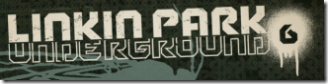

6 décembre 2006
Linkin Park Underground 6

Ca y est ! Je me suis inscrit au club LPU pour un an. J'ai pris l'offre à 30$ qui propose en plus le LPU 5 (CD, autocollants, porte clés, guitar pick, badge). Avec les frais de port cela me revient à 42$ soit 31 €. J'ai tout de suite accès au site, mais pour les goodies il va falloir attendre 8 à 10 semaines :( (au moins j'ai déja les mp3 du miniCD :P ) En attendant... mon frère s'est choisis un t-shirt sympa à l'effigie de Kakashi (du manga Naruto) sur goeland.fr qu'il recevra dans 8 jours gaaa... EDIT : Retournement de situation ! J'ai reçu mon pack LPU 6 en moins de 3 semaines et Goeland est en rupture de stock !!! Du coup c'est moi qui est servi en premier :D Au passage LPU c'est vraiment cool !
Commentaires 2